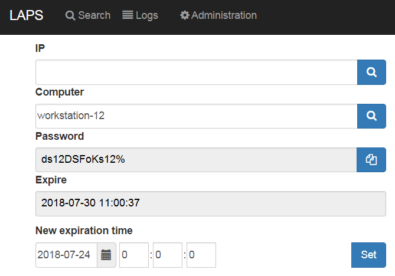
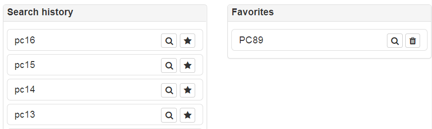
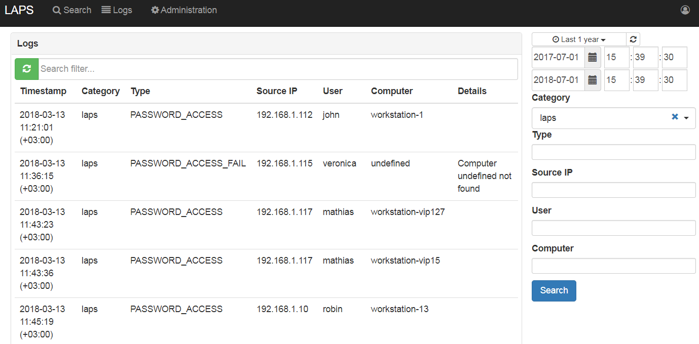
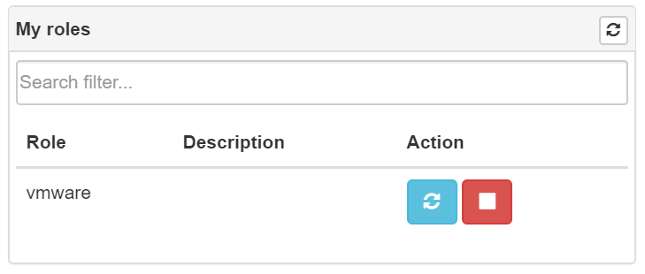
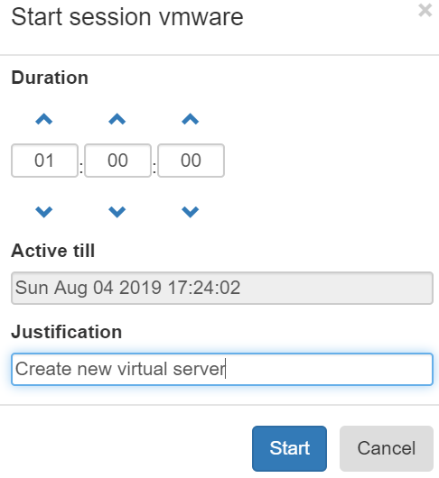
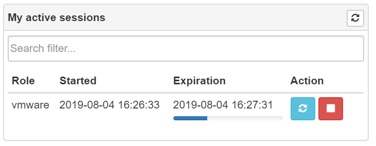

Working with LAPS Portal¶
LAPS Passwords access¶
After successfully login you can get password of computer. It is possible to use computer name of IP address. If you use IP address LAPS portal do reverse DNS lookup to determine computer name
It is possible to mark computer as favorite to save time during next search. LAPS Portal also saves search history (computer names only).
Quick launch buttons¶
Warning
Quick launch buttons uses ActiveX that’s why supported only in Internet Explorer
You create command templates in My Profile -> Commands. Here you can set command patterns to pass computer name and password to any command which can process it. For example to quick launch DameWare remote admin toll you can use following pattern:
"c:\program Files\DameWare Mini Remote Control 11.0 x64\dwrcc.exe" -c: -h: -a:1 -m:%pc% -u:Administrator -p:%pwd%
Templates supports following parameters:
- %pc% - computer name
- %pwd% - password
- %copypwd% - copy password to clipboard (will be deleted from command template after copy)
After command templates are configured quick launch button will be shown in LAPS passwords viewer.
LAPS security log¶
Portal has built in Log viewer where you can look for various events
Just-in-time administration (JITA)¶
Just-in-time administration (JITA) is an approach for minimizing the privileged account attack vector in a security strategy, combined with a precise definition of assigned authorizations. Every time an eligible users needs to perform a task which requires membership in privileged groups, they enable such membership for defined period of time. The membership expire after a specified time period, so that a malicious user can’t steal the access.
After successfully login you can see JITA roles available at “JITA” part of portal.
At “My roles” panel you can start, stop or extend active JITA session. At start session dialog it is needed to set duration which should be less than maximum allowed TTL defined in role’s configuration and justification describing a reason.
Active JITA sessions of authenticated user are shown at “My active sessions” pannel. It is possible to stop or prolong active JITA session.
